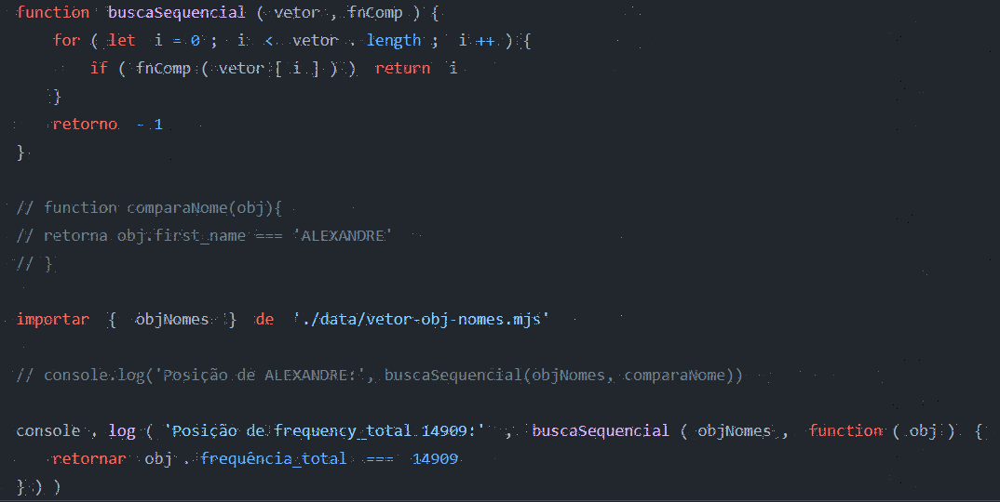
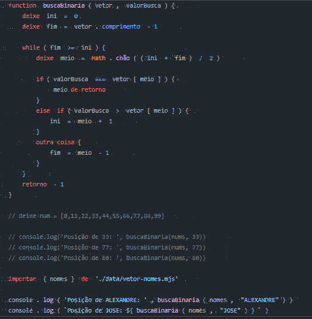
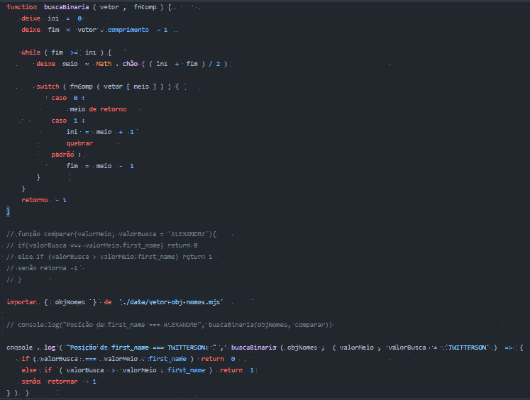

Percorre o vetor, verificando se cada um dos elementos corresponde
ao valor de busca. Ao encontrar uma correspondência, retorna a posição
onde o valor de busca está no vetor.
Caso o valor de busca não exista no vetor, retorna o valor convencional
-1.
LÓGICA SEQUENCIAL COM OBJETO
Algoritimo de busca sequencial em um vetor de objetos.
Quando um algoritimo de busca precisa atuar sobre um vetor de objetos, a comparacão não deve ser feita dentro da função que implementa o algoritmo. Em vez disso, recembemos uma outra função (externa) como parametro que resolverá a comparação.
Essa função externa será chamada passando o objeto atual do vetor e esperará um retorno true caso a função externa determine que o objeto atual contém o valor de busca, ou false, caso contrário.

BUSCA BINÁRIA
Requer um conjunto de dados ORDENADOS.
Atua dividindo o vetor sucessivamente em metades aproximadas, até que o valor de busca seja localizado, ou que o ponteiro de fim acabe antes do ponteiro de início.
Essa ultima situação indica que o vlaor de busca não existe no conjunto.

BINÁRIA COM OBJETO
Algoritmo de busca binária em vetor de objetos.
Para usar a busca binária em um VETOR DE OBJETOS, precisamos transferi a comparação para uma função externa que retorne um dos três valores:

ORDENAÇÃ BUBBLE SORT
O bubble sort, ou ordenação por flutuação é um algoritimo de ordençaõ dos mais simples. A idéia é percorreto o vetor diversas vezes, e a cada passagem fazer flutuar para o topo o maior elemento da sequência.